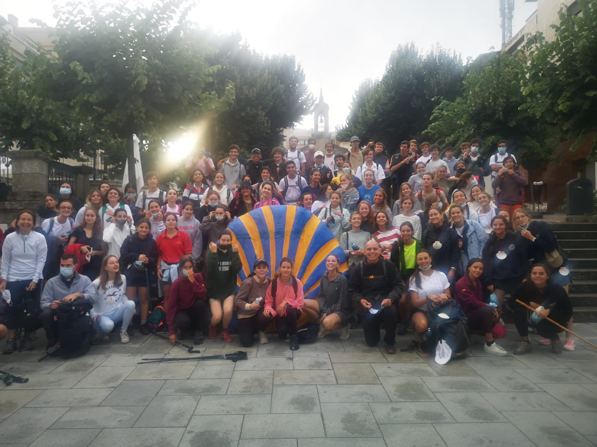
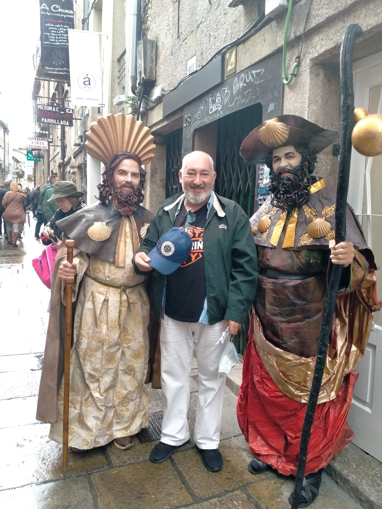
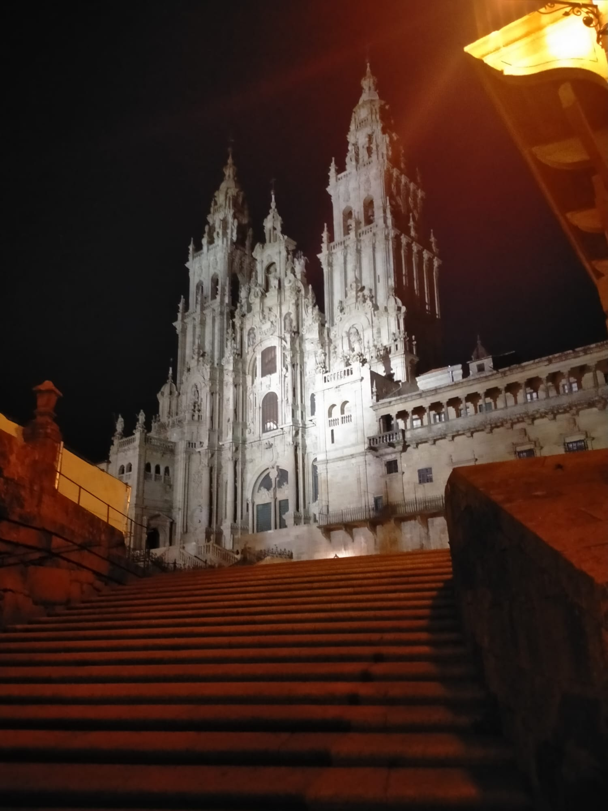
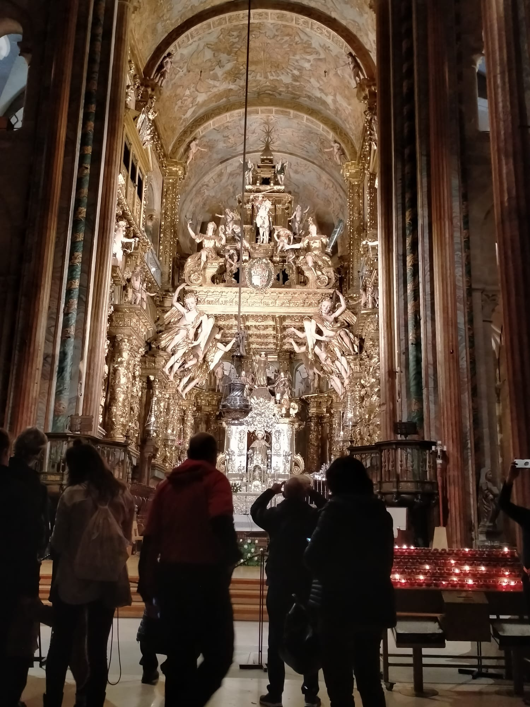
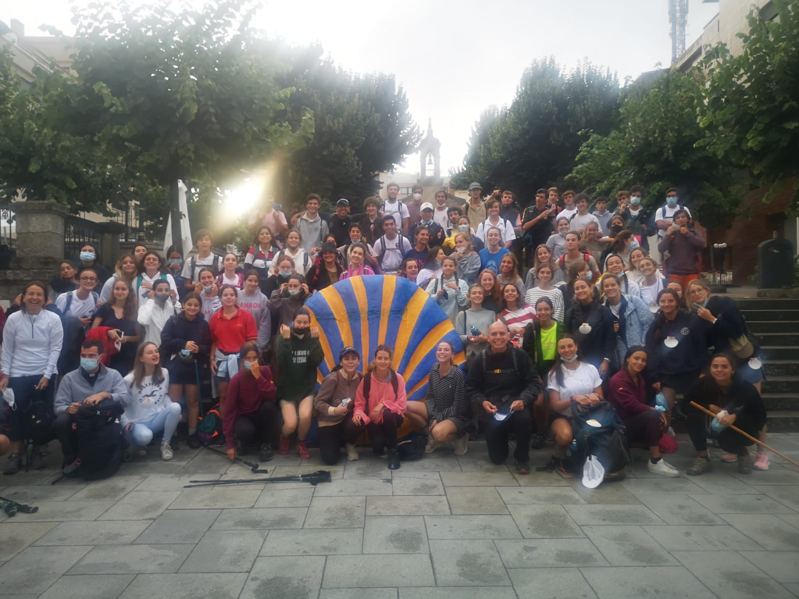
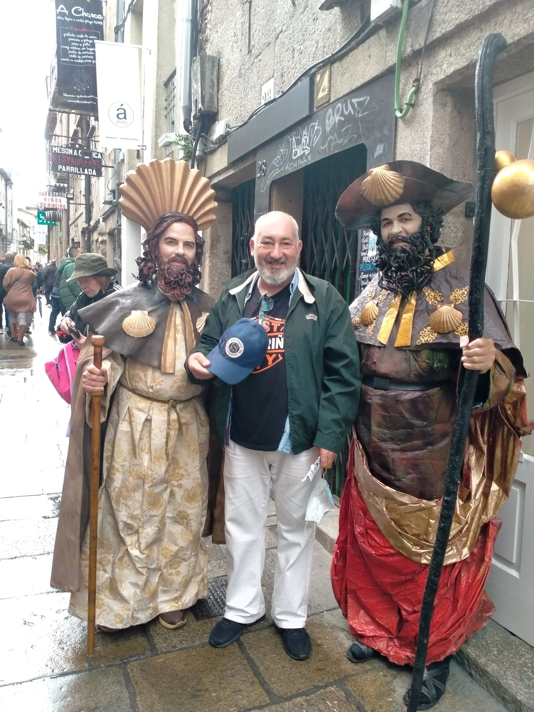
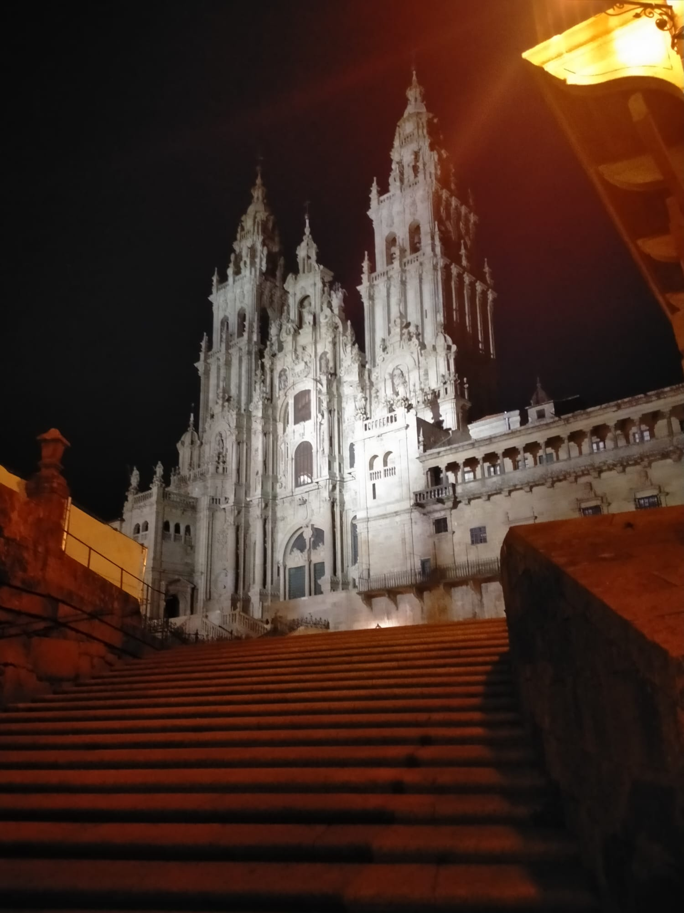
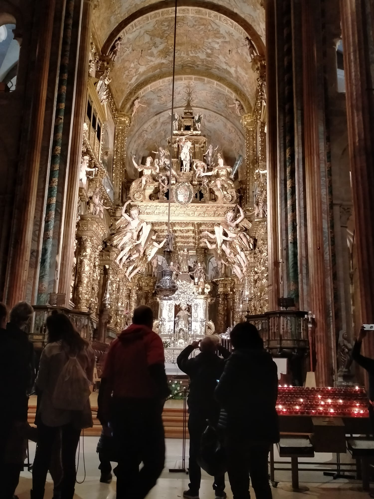

A Francachela
A FrancachelaYa más de doce siglos llevan los peregrinos visitando las tierras de la Hermosa Galicia, en su peregrinar, en su búsqueda interna de ese Tesoro, esa respuesta, esa guía que solamente el Camino a Santiago ha podido ayudarles a encontrar, a develar. Llegando incluso a formar parte importante de la cultura gallega. Hablar en el mundo sobre Galicia, indudablemente traerá a colación el Camino a Santiago dentro de la conversación.
Mucho tiempo ha pasado desde que la Vía Láctea era la única guía para aquellos primeros peregrinos. En sus inicios y hasta hace poco, el Camino a Santiago requería de pericia, conocimiento, un guía y suerte, para que el peregrino pudiese transitar por él y llegar a su feliz y final destino. Las nuevas tecnologías, permiten ahora, una manera más sencilla y confiable para poder peregrinar de forma tal, que el camino mismo, pueda ser dedicado a la meditación, la contemplación o el esparcimiento, según sea la motivación del peregrino.
 






